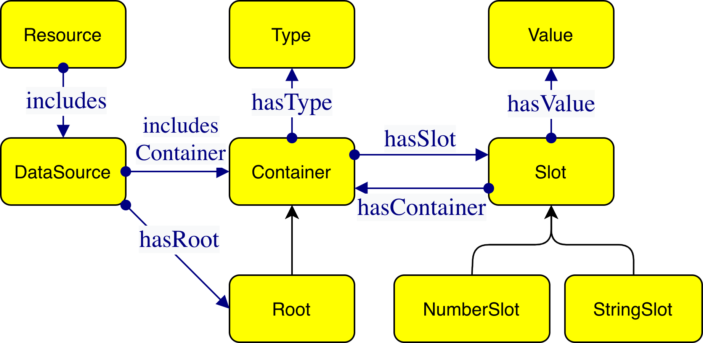

Copyright © 2026 the Contributors to the Façade-X Primer Specification, published by the Data Façades Community Group under the W3C Community Contributor License Agreement (CLA). A human-readable summary is available.
This document is a non-normative primer for Façade-X. It introduces the model informally — through motivation and worked examples — to help developers, implementers, and users build an intuition for how Façade-X represents heterogeneous data as RDF. The precise definitions live in the companion Façade-X Concepts and Metamodel and Façade-X Schema Vocabulary documents. Wherever this primer and those documents appear to disagree, the normative documents take precedence.
This specification was published by the Data Façades Community Group. It is not a W3C Standard nor is it on the W3C Standards Track. Please note that under the W3C Community Contributor License Agreement (CLA) there is a limited opt-out and other conditions apply. Learn more about W3C Community and Business Groups.
This is version 0.1 of this document, released on 2026-10-06, at https://w3c-facade-x.github.io/facade-x-specs/0.1/primer.html. This version will not change. The latest release is always at https://w3c-facade-x.github.io/facade-x-specs/primer.html. The editor's draft, which may include changes made after this release, is at https://w3c-facade-x.github.io/facade-x-specs/dev/primer.html. The issues addressed in this release, and those still open, are listed in the release notes.
This document is currently in active development. It is informative throughout and places no requirements on implementations.
GitHub Issues are preferred for discussion of this specification.
This document is one of seven Façade-X specification documents produced by the Data Façades Community Group:
No open issues with label FX Primer.
This section is non-normative.
Façade-X is described normatively in two places: the
Concepts and Metamodel document, which defines the model in first-order logic,
and the Schema Vocabulary document, which defines the fx: terms that realise it in RDF.
Those documents are precise but deliberately terse. This primer sits alongside them and answers a
different question: what does Façade-X actually look like, and why is it shaped the way it is?
The intended audience is threefold:
No prior familiarity with the metamodel is assumed, though a working knowledge of RDF and Turtle is helpful.
This section is non-normative.
Real-world data arrives in many shapes: CSV files, JSON documents and APIs, spreadsheets, XML feeds, and more. Each format imposes its own structural conventions, and the usual way to bring such data into a knowledge graph is to write a bespoke, format-specific transformation for every source. These pipelines are effort-intensive to build and brittle to maintain: a change in the source shape ripples through hand-written mapping code.
Façade-X takes a different route. Instead of a new mapping language per format, it observes that the common data formats are all built from the same two structural ingredients — ordered sequences (lists, arrays, rows) and keyed collections (maps, objects, records) — holding primitive values at the leaves. If those ingredients are captured once, in a single abstract model, then any format can be presented as if it were RDF, and queried directly with SPARQL, without a transformation step written in advance.
The rest of this primer shows what that single model is and how a few familiar formats land in it.
This section is non-normative.
Façade-X describes every data source with a small, fixed vocabulary of structural primitives.

The pieces are:
Two framing terms sit above these. A Resource is a digital artifact — a file or a service — and it includes one or more Data Sources, the actual collections of data inside it. A CSV file is a resource that includes one data source (its table); a spreadsheet is a resource that includes several (one per sheet). Each data source has exactly one Root container.
That is the whole model. Everything below is a matter of showing how ordinary data maps onto these few pieces.
This section is non-normative.
Consider a small JSON document:
{
"name": "Alice",
"age": 30,
"pets": ["cat", "dog"]
}
Read through the Façade-X lens, this is a single data source whose Root is the outer object. That
object is a Container with three StringSlots — name, age, and pets. The first two
hold Values; the third holds a nested Container (the array), whose two NumberSlots hold
the values "cat" and "dog" in order.
Realised with the fx: vocabulary, the RDF looks like this (in Turtle):
@prefix fx: <http://sparql.xyz/facade-x/ns/> .
@prefix xyz: <http://sparql.xyz/facade-x/data/> .
@prefix rdf: <http://www.w3.org/1999/02/22-rdf-syntax-ns#> .
_:root a fx:Root ;
xyz:name "Alice" ;
xyz:age 30 ;
xyz:pets _:pets .
_:pets rdf:_1 "cat" ;
rdf:_2 "dog" .A few things to notice, each of which is a general rule rather than a detail of this example:
fx:Root. There is exactly one such container per data source.xyz: namespace
(xyz:name, xyz:age, xyz:pets).rdf:_1, rdf:_2, …,
the standard RDF container-membership properties. Order is preserved by these indices.This section is non-normative.
Tabular data maps just as directly. Take:
name,age
Alice,30
Bob,25
Here the table is the Root container. Its slots are positional — one NumberSlot per data row — and each holds a nested container standing for that row. When the first line is treated as a header, each row container has StringSlots named after the columns:
@prefix fx: <http://sparql.xyz/facade-x/ns/> .
@prefix xyz: <http://sparql.xyz/facade-x/data/> .
@prefix rdf: <http://www.w3.org/1999/02/22-rdf-syntax-ns#> .
_:table a fx:Root ;
rdf:_1 _:row1 ;
rdf:_2 _:row2 .
_:row1 xyz:name "Alice" ;
xyz:age "30" .
_:row2 xyz:name "Bob" ;
xyz:age "25" .Note that the CSV values come through as strings ("30", not 30): CSV carries no datatype
information, so Façade-X reports what the format actually provides rather than guessing. Whether the
header row is interpreted as names or treated as ordinary data is a choice an implementation exposes
to the user; the shape above corresponds to the header-aware reading.
This section is non-normative.
The same handful of primitives recur across formats. The table below summarises how familiar structures land in the model.
| Source structure | Façade-X primitive | Typical RDF realisation |
|---|---|---|
| Object / map / record | Container with StringSlots | xyz: key properties on a container |
| Array / list / sequence of rows | Container with NumberSlots | rdf:_1, rdf:_2, … on a container |
| Primitive cell / scalar | Value | RDF literal |
| XML / element tag name | Type on a container | rdf:type with an xyz: IRI |
| Whole document / table / sheet | Root container of a data source | a container typed fx:Root |
Where a resource holds more than one data source — the sheets of a spreadsheet, say — each data source is kept in its own named graph, so several sources can share one RDF dataset without their containers being confused for one another.
This section is non-normative.
The metamodel states several structural constraints that can look like formalities at first glance. Read through the primer's lens they each earn their place, because together they guarantee that every data source maps to a predictable, tree-shaped RDF structure with a single entry point — which is exactly what lets a generic engine translate any format uniformly and lets query authors rely on a stable shape.
?root a fx:Root without knowing anything else about the format.None of these are restrictions the user has to think about; they are properties the model provides, and the reason the mapping from any supported format is well-defined.
This section is non-normative.
A façade need not be produced as a file before it can be queried. In the reference implementation,
SPARQL Anything, the façade of a source is exposed inside a query
through a magic SERVICE clause whose IRI uses the x-sparql-anything: protocol. The engine
intercepts that clause, builds the Façade-X representation of the resource named there, and
evaluates the enclosed graph pattern against it — so an ordinary SPARQL 1.1 query reads the source
directly, with no prior transformation step.
Options are passed to the engine as triples inside the SERVICE block: the special subject
fx:properties carries one option per triple, using the terms of the
Engine vocabulary (fxe:). The only mandatory option is the source, typically
fxe:location (a URL or file path). Returning to the JSON example, this query lists each pet
together with the owner's name:
PREFIX fx: <http://sparql.xyz/facade-x/ns/>
PREFIX fxe: <http://sparql.xyz/facade-x/engine/>
PREFIX xyz: <http://sparql.xyz/facade-x/data/>
PREFIX rdfs: <http://www.w3.org/2000/01/rdf-schema#>
SELECT ?name ?pet WHERE {
SERVICE <x-sparql-anything:> {
fx:properties fxe:location "people.json" .
?root a fx:Root ;
xyz:name ?name ;
xyz:pets ?pets .
?pets rdfs:member ?pet .
}
}The pattern starts from the Root, reads the name value, and follows the pets slot to the nested
container. Rather than enumerate that container's numeric slots by hand (rdf:_1, rdf:_2, …), it
uses rdfs:member, which matches any of a container's membership slots at once —
collecting the values "cat" and "dog" with a single pattern.
The same options may equivalently be written inline in the protocol IRI, so
SERVICE <x-sparql-anything:location=people.json> is shorthand for the fxe:location triple above;
further options (fxe:media-type, fxe:namespace, format-specific settings, and so on) are supplied
the same way. Nothing in the graph pattern is specific to JSON: point the same SERVICE clause at a
CSV file, an XML document, or a spreadsheet and the identical query shape applies, because every
source presents the same Façade-X primitives.
This section is non-normative.
fx: term, its RDF Schema
characterisation, and the use of named graphs.